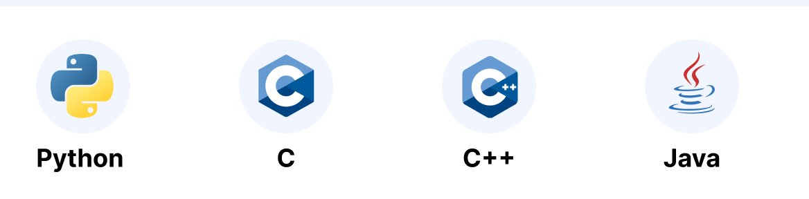

Here is a table of languages I'm programming in right now.
|
Languages I used in the past.
- C++
- OCaml
- C
- Java
The image of OCaml:

And what languages did you program in?
Important info
Submitted answears in the form aren't saved anywhere. In fact, this form does nothing.
Progress of the page:
Here you can read some informations about one of the most popular programming languages. 